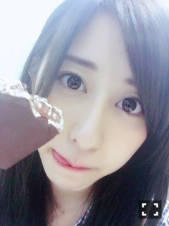
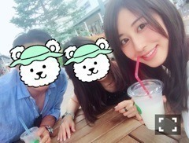

| 2016/06 20 Mon | 斎藤ちはる 父の日だよ〜何かしてあげましたか？私は。。まだ。。(´>∀<｀)ゝ |
ちはるーむへようこそ(｡･o･｡)ﾉ

ぺろりん。
アイス好きとしては、夏がたまらぬ。
さらにさらにチョコミント好きとしては、夏が幸せで幸せでたまらぬ。。
チョコミントって好き嫌いがきっぱり分かれるよね〜
好きな人は大好きだし、
嫌いな人は絶対に無理って言う！！
マネージャーマユコが
なんであんな歯磨き粉の味するもの食べれるの！？
って私に言ってきたばかりだもの。
私はチョコミント、アイスに留まらず
お菓子になってたらすぐ買っちゃうよ〜
この季節は種類が豊富で嬉しいね♡
---------------------------♡
今日は父と母とドライブがてら買い物してきたよ♪

仲良し斎藤家！
妹は部活があったからお留守番。
でもちゃんとお土産買って帰ってきたよ〜
今日は父の日！
父の日だけど、特に何も出来てないから
ちょっと遅れちゃうけど
また今度なにかしてあげようかな。
いつもお世話になってるから(> <)
お父さんって何が喜ぶんだろう？？
皆さんだったら何が喜ぶと思う？？
そんな今日の乃木中は、父の日企画！！
普段はなかなか表に出ないお父さん達が主役だよ
私たちメンバーはとても照れくさいよ
今回はお父さんがアンケート等参加したからなのか
収録したその日から、いつ放送なの！？と
多分3回くらい聞かれました。。
楽しみなんだろうな( ◦˙ ˙◦ )笑
今日は初めてレインシューズ買ったから、
雨の日も少し楽しみになりそう（´-`）.｡oO
私的に、靴ってその日の気分の大部分を占めている気がするんだよね！！
見てるだけで嬉しくなる、
履くだけで幸せになる、
＂ときめく靴＂っていうのがあると思う
同様に＂ときめく服＂もあると思う！
好きなものに囲まれて過ごすって大切だよね〜♡
今日は短いけど。。
おやすみ
斎藤ちはる